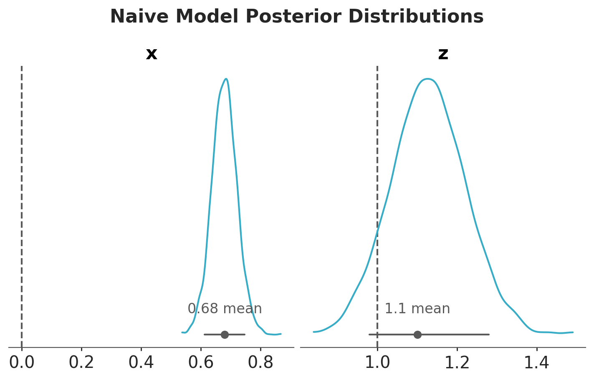
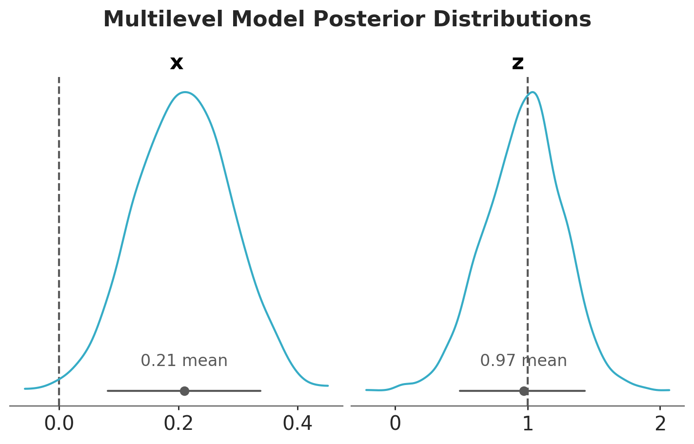

We are interested in the relationship between \(X\) and \(Y\).
Prepare Notebook
from typing import Anyimport arviz.preview as azimport bambi as bmbimport matplotlib.pyplot as pltimport numpy as npimport pandas as pdimport pymc as pmimport seaborn as snsfrom pymc import doaz.style.use("arviz-variat")plt.rcParams["figure.figsize"] = [7, 5]plt.rcParams["figure.dpi"] =100plt.rcParams["figure.facecolor"] ="white"%config InlineBackend.figure_format ="retina"
It seems that there is a relationship between \(x\) and \(y\) (the higher \(x\) the higher \(y\)). However, as the true value of \(b_{xy}\) is \(0\), we know this is just due to the group-level confounding.
Now we are ready to fit all the models from the video.
Naive Model
First we fit the naive model where we simply ignore the group-level confounding.
priors = {"Intercept": bmb.Prior("Normal", mu=0, sigma=1),"x": bmb.Prior("Normal", mu=0, sigma=1),"z": bmb.Prior("Normal", mu=0, sigma=1),}df = pd.DataFrame( {"x": x_obs,"y": y_obs,"z": z_obs[g], # map group-level z to observation level"group": g, # group indicator per observation })naive_model = bmb.Model("y ~ x + z", data=df, family="bernoulli", priors=priors, auto_scale=False,)naive_model.build()naive_model.graph()
Modeling the probability that y==1
Initializing NUTS using jitter+adapt_diag...
Multiprocess sampling (4 chains in 4 jobs)
NUTS: [Intercept, x, z]
Sampling 4 chains for 1_000 tune and 1_000 draw iterations (4_000 + 4_000 draws total) took 1 seconds.
Let’s look at the posterior distributions of the parameters.
pc = az.plot_dist( idata_naive, var_names=["x", "z"], figure_kwargs={"figsize": (7, 4)},)az.add_lines(pc, values={"x": true_params["bxy"], "z": true_params["bzy"]})fig = pc.get_viz("figure")fig.suptitle("Naive Model Posterior Distributions", fontsize=16, y=1.1);

As expected, the posterior distribution of \(b_{xy}\) does not include the true value of \(0\). The other parameter, \(b_{zy}\), is estimated with a high uncertainty.
Fixed Effects Model
Now we fit the fixed effects model where we control for the group-level confounding by including the group-level intercepts as parameters (no hierarchical structure).
Modeling the probability that y==1
Initializing NUTS using jitter+adapt_diag...
Multiprocess sampling (4 chains in 4 jobs)
NUTS: [C(group), x, z]
Sampling 4 chains for 1_000 tune and 1_000 draw iterations (4_000 + 4_000 draws total) took 5 seconds.
The rhat statistic is larger than 1.01 for some parameters. This indicates problems during sampling. See https://arxiv.org/abs/1903.08008 for details
The effective sample size per chain is smaller than 100 for some parameters. A higher number is needed for reliable rhat and ess computation. See https://arxiv.org/abs/1903.08008 for details
Let’s look at the posterior distributions of the parameters of the fixed effects model.
Observe that the uncertainty of \(b_{zy}\) is higher in the fixed effects model. The reason is because the intercepts and the group-level \(z\) terms are not identifiable (there are many ways to sum up two numbers to get the same group-level intercept).
Multilevel Model
Now we fit a multilevel model where we control for the group-level confounding by including the group-level intercepts as parameters and a hierarchical structure. We use a non-centered parameterization to improve the sampling efficiency.
Modeling the probability that y==1
Initializing NUTS using jitter+adapt_diag...
Multiprocess sampling (4 chains in 4 jobs)
NUTS: [Intercept, x, z, 1|group_sigma, 1|group_offset]
Sampling 4 chains for 1_000 tune and 1_000 draw iterations (4_000 + 4_000 draws total) took 3 seconds.
pc = az.plot_dist( idata_multilevel, var_names=["x", "z"], figure_kwargs={"figsize": (7, 4)},)az.add_lines(pc, values={"x": true_params["bxy"], "z": true_params["bzy"]})fig = pc.get_viz("figure")fig.suptitle("Multilevel Model Posterior Distributions", fontsize=16, y=1.1);

In this case, the multilevel model is not able to estimate the true value of \(b_{xy}\). The reason is that it is not really factoring out the group-level confounding through the mean. Still, for this model, \(b_{zy}\) is correctly estimated with narrower uncertainty as compared to the fixed effects model:
This is a cool trick! The idea is to explicitly add the group-level mean of \(x\) as a predictor as a proxy for the unmeasured group-level confounder. We keep the (non-centered) multilevel model structure.
Modeling the probability that y==1
Initializing NUTS using jitter+adapt_diag...
Multiprocess sampling (4 chains in 4 jobs)
NUTS: [Intercept, x, z, xbar, 1|group_sigma, 1|group_offset]
Sampling 4 chains for 1_000 tune and 1_000 draw iterations (4_000 + 4_000 draws total) took 4 seconds.
This model is able to estimate the true value of \(b_{xy}\) and \(b_{zy}\) with narrower uncertainty for \(b_{zy}\) as compared to the fixed effects model.
pc = az.plot_dist( idata_mundlak, var_names=["x", "z"], figure_kwargs={"figsize": (7, 4)},)az.add_lines(pc, values={"x": true_params["bxy"], "z": true_params["bzy"]})fig = pc.get_viz("figure")fig.suptitle("Mundlak Model Posterior Distributions", fontsize=16, y=1.1);
We see that the Mundlak model is the best model in this case as it balances the accuracy of the fixed effects model and gets the betetr uncertainty estimate from the multilevel model.
This was a great learning experience! Thank you Richard McElreath!